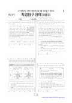

문제지


시험지를 먼저 풀어 보세요. 등급컷·표준점수·난이도는 흐리게 가려 뒀어요.
정답 변경 없음
이의신청 3문항 · 평가원 상세 답변 3문항
이의 요지
이의제기의주된내용은<보기>선택지ㄷ에서언급된‘이론적으로정확한치수’는치수에테두리를치는것으로알고있고, 제시문에서사용된괄호는이론적으로정확한치수가아닌참고치수로사용되는것으로알고있으므로문제에이상이있다는것입니다
평가원 답변
이문항은제시된입체도를제3각법으로나타낸정투상도에기입된치수및치수보조기호(수능특강p.35-치수보조기호/ 한국산업표준KS B ISO 129-1:2014 [제도-치수및공차의표시])를보고치수보조기호의명칭과쓰임새를구별하는능력을측정하는문항입니다.이의제기의주된내용은<보기>선택지ㄷ에서언급된‘이론적으로정확한치수’는치수에테두리를치는것으로알고있고, 제시문에서사용된괄호는이론적으로정확한치수가아닌참고치수로사용되는것으로알고있으므로문제에이상이있다는것입니다.그러나, <보기> 선택지‘ㄷ’의이론적으로정확한치수는치수숫자에사각형테두리를두른형식(예, )으로사용되며, 제시문의도면에사용한치수숫자에괄호를친(72)는참고치수에해당하므로오선택지입니다. 그리고<보기> 선택지‘ㄱ’은45° 모따기의크기가3mm임을의미하는치수보조기호C3이사용된곳이있기에정선택지이며, <보기>선택지‘ㄴ’의구의지름을나타내는치수보조기호는S∅32에사용되어정선택지입니다. 따라서<보기> 선택지‘ㄱ’과‘ㄴ’의정선택지조합으로구성된③번이정답이며, 이문항에는오류가없습니다.-관련자료-․ 한국산업표준KS B ISO 129-1:2014 제도-치수및공차의표시․ 수능특강치수05 치수기입하기-치수보조기호(p. 35.)
이의 요지
이의제기의주된내용은제시문의투상도형태가나타나는입체도는<보기>선택지ㄱ, ㄴ, ㄷ모두가해당되므로정답에오류가있다는것입니다
평가원 답변
이문항은정투상도의제3각법(관련자료: 수능특강, p.49, 정투상도제3각법/ 교과서미래엔, p.80, 정투상도제3각법)으로입체도를상상하여정면도와평면도가동일하게나타나는입체를찾는, 정투상도에대한이해능력을측정하는문제입니다.이의제기의주된내용은제시문의투상도형태가나타나는입체도는<보기>선택지ㄱ, ㄴ, ㄷ모두가해당되므로정답에오류가있다는것입니다.그러나, 제시문의물체를제3각법으로그릴때정면도와평면도가동일하게나타나는입체도로서, <보기>ㄴ은그림에서나타나듯이평면도에서는참이나정면도에서는숨은선이나타나므로오선택지이며, <보기>ㄱ과ㄷ은평면도와정면도가동일하게나타나므로정선택지입니다.따라서<보기> ㄱ, ㄷ인③번이정답이며, 이문항의정답에는오류가없습니다.
<보기> ㄴ과ㄴ의정면도
이의 요지
이의제기의주된내용은<보기> ㄷ이문항조건에제시되어있는정면도와우측면도로만들수있는물체의형상으로옳으므로정답에오류가있다는것입니다
평가원 답변
이문항은주어진정면도와우측면도를보고정투상도의제3각법(관련자료: 수능특강, p.49, 정투상도제3각법/ 교과서미래엔, p.80, 정투상도제3각법)으로입체도를상상하여가능한평면도를찾는정투상도에대한이해능력을측정하는문제입니다.이의제기의주된내용은<보기> ㄷ이문항조건에제시되어있는정면도와우측면도로만들수있는물체의형상으로옳으므로정답에오류가있다는것입니다.그러나, <보기> ‘ㄷ’은아래그림과같이우측면도에타원으로표시된가로선이없으면평면도가될수있으나현제시된정면도와우측면도로는평면도가될수있는경우가없으므로오선택지입니다. 그리고, <보기> ‘ㄱ’은주어진정면도와우측면도를보고평면도가될수있는경우가아래그림과같이있으므로정선택지입니다. 또한, <보기> ‘ㄴ’은주어진평면도및정면도, 우측면도로는만들수있는물체의형상이없으므로오선택지입니다.따라서<보기> 선택지‘ㄱ’인①번이정답이며이문항의정답에는오류가없습니다.보기정면도우측면도평면도입체도ㄱㄷ
발행 기관: 한국교육과정평가원(KICE). 파일 위치: 이 사이트가 보관한 사본. 저작권은 발행 기관에 있습니다. 원본과 다르거나 게시 중단이 필요하면 연락처로 알려 주세요. 등급컷 출처 구분은 데이터 원칙에서 설명합니다.
지난 회차의 등급컷·표준점수·난이도는 흐리게 가려 뒀어요.
막대 색은 역대 대비 난이도 · 진한 막대가 이 시험 · 막대를 누르면 그 회차로 이동
| 회차 | 1등급컷 | 표점 최고 | 1등급 표점 | 난이도 |
|---|---|---|---|---|
| 6모2016학년도이 시험 | — | — | — | — |
| 수능2015학년도 | 95 | — | 140 | — |
| 수능2014학년도 | 84 | — | 141 | — |